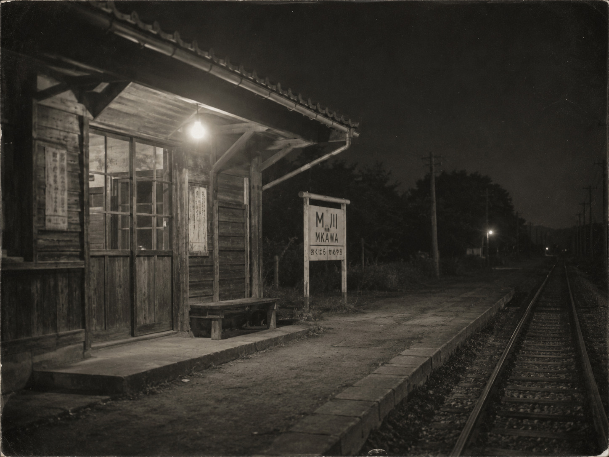
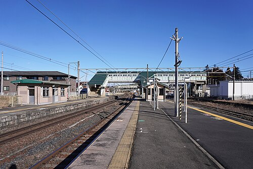

資料群番号：MK-24 ／ 公開区分：全文
M川事件関係資料 概要・新聞縮刷
対象期間：1949年8月16日－1963年9月12日 ／ 資料点数：54点
| 発生 | 1949年8月16日深夜 |
|---|
| 場所 | T北本線M川駅－K森駅間 |
|---|
| 被害 | 貨物列車が脱線転覆。乗務員3名死亡、負傷者あり |
|---|
| 逮捕 | 同年8月下旬から9月にかけ、K鉄労働組合員ら20名 |
|---|
| 裁判 | 1950年第一審判決。破棄差戻しを経て、1963年に20名全員の無罪が確定 |
|---|
新聞縮刷の転記を表示
『芙島日日』1949年8月18日朝刊2面（整理番号 MK-N01）
貨物列車、M川駅北方で転覆 乗務員三名死亡
十六日深夜、T北本線M川駅北方で貨物列車が脱線し、機関車と貨車数両が転覆した。現場では線路部品が外されているのが見つかり、県警と鉄道当局が関係者から事情を聴いている。
『芙島日日』1949年9月23日夕刊1面（整理番号 MK-N06）
M川事件、逮捕二十名に
県警は二十三日までに、K鉄労働組合員ら二十名を逮捕したと発表した。弁護人は一部の供述について、長時間の取調べによるものだとして争う方針を示した。
整理番号：MK-I02 ／ 照会票：2026-04-17
M川事件関係資料 人物記述索引
照合対象：被疑者・被告人名簿、証人等調書目録、現場立会記録、押収品目録
被疑者・被告人欄には20名が記載されている。氏名は公開複製では非表示。逮捕人数と判決対象人数は、各審の判決要旨と一致する。
照会語：事件当夜／線路付近／作業着姿の男
照会結果：公開範囲の人名索引および人物記述索引に、該当する記載を確認できず。
備考：目録に記載がないことは、当該人物が現場にいなかったことを示すものではありません。非公開資料3点および欠番資料2点は照合対象外です。
整理番号：MK-C00
M川事件 裁判年表
出典：各審判決要旨、弁護団申立書、全国紙縮刷版
逮捕・起訴K鉄労働組合員ら20名を逮捕。全員が公判で起訴事実を否認。
第一審20名全員に有罪判決。うち5名は死刑。弁護側が控訴。
控訴審原判決を一部変更した上で有罪を維持。弁護側が上告。
██メモ報道押収後に証拠提出されなかった事務ノートを全国紙が報道。
上告審最高裁が有罪判決を破棄し、審理を差し戻す。
差戻し審20名全員に無罪。検察側が上告。
無罪確定最高裁が検察側上告を退け、20名全員の無罪が確定。
整理番号：MK-C18 ／ 原資料：閲覧制限 ／ 複製：公開
「██メモ」関係記録
大学ノート1冊・38丁 ／ 記入者：会社庶務係（氏名非表示）
会社側の庶務係が、労使交渉の出席者と発言要旨を業務として記入したノート。記入者の姓を取って、後の裁判資料では「██メモ」と呼ばれる。
押収から無罪確定までの記録を表示
- 1949年8月
- 捜査機関が会社事務室から押収。押収品受領票に「大学ノート一冊」と記載。
- 第一・二審
- 検察側提出の証拠目録に記載なし。弁護側への交付記録なし。
- 1958年5月
- 全国紙が所在を報道。地検は保管の事実を認め、内容への回答を保留。
- 1958年6月
- 弁護団が謄写と証拠提出を申立て。複製が裁判記録へ編綴される。
- 1959年8月
- 破棄差戻し判決。メモを含む未提出資料の取扱いが判決要旨に記載。
MK-C18-2 該当頁転記
出席者 …… ██、██、（被告氏名）ほか
発言 （被告氏名）「次回の協議日を二十二日としたい」
欄外：予定終了時刻を訂正。庶務係確認印あり。
該当欄は、検察側が同じ被告を別場所での「謀議」に参加したとした時間帯に記入されていた。差戻し審は、この記載を同被告の所在を示す資料の一つとして採用した。
整理番号：MK-27-07
『市民の声』第七号
発行：M川事件被告を守る会 ／ 1952年3月 ／ 全4頁
公判傍聴者、沿線の保線作業員、学生、被告支援者の家族による投書を掲載した会報。公開複製では個人名と住所を非表示としている。
私は法律のことは分かりません。ただ、傍聴席で聞いた話と翌日の新聞が違うことは分かります。
編集引継簿には、1952年2月20日付「蛸川 ██」名義の投書1通を当局照会のため提出したとの記入があります。原紙の返却記録はありません。
整理番号：MK-29-11
『署名のお願い M川事件無実の訴え』
発行：M川事件被告を守る会 ／ 1954年秋 ／ B5判1枚
法務省への提出分として1,300名を集計した第四次署名用紙の添付ビラ。受付印は1954年11月8日。公開画像では署名者の氏名と住所を表示していない。
整理番号：MK-B04 ／ 請求記号：郷土 326-MK-1954
文集『声は壁を透して』
- 副題
- M川事件の被告と家族の手紙
- 編集・発行
- M川事件被告を守る会
- 刊行
- 1954年秋
- 形態
- A5判、孔版印刷、非売品
- 内容
- 被告・家族・支援者の手紙、約300通
- 所蔵
- 1冊。表紙欠損、本文2頁に破れ
収録文の一部を表示
今月の面会には行けません。子どもの学校で必要なものが重なりました。来月は必ず行きます。
夜勤で同じ区間を歩いた者として、道具を使った音に誰も気づかなかったという説明には納得できません。
未収録資料1通の受入記録を表示
| 受入番号 | 編-301 |
|---|
| 差出人 | 蛸川 ██ |
|---|
| 宛先 | 猫塚 清治 |
|---|
| 資料 | 封書1通、添え状1枚 |
|---|
| 処理 | 未収録。理由欄は空欄 |
|---|
| 所在 | 手紙原紙：確認できず／添え状控え：編集引継簿に貼付 |
|---|
添え状控え（末尾3行）
もし収録がかなわなくても、どうか、お気になさらないでください。
清治さんのことは、ぜんぶ書いて、████を取ってあります。
同じものが、もう一つ、あるからです。
受入番号「編-301」は文集本体の収録順にはありません。当室で確認できる未収録資料の記載は、この1通のみです。
関連項目：M川事件資料wiki「関連文書」
整理番号：BL-73
蒼沼ブルーランド開園案内

参考復元図。聞き取り記録 AV-12 をもとに作成。
年代：1973年 ／ 種別：案内・写真
蒼沼南岸に開園した遊園地の案内。観覧車、売店、旧管理棟が記載され、園のマスコットにはタコが使われている。
関連：蒼沼ブルーランド思い出保存会
整理番号：PH-MK-02
M川駅 年代比較

1949年頃の参考復元図。寄贈音声 AV-03 の描写をもとに作成。

近年撮影。同一駅の参考写真。
右写真：Mister0124、CC BY-SA 4.0、Wikimedia Commons（改変なし）
一致する公開資料はありません。語句を短くして再検索してください。